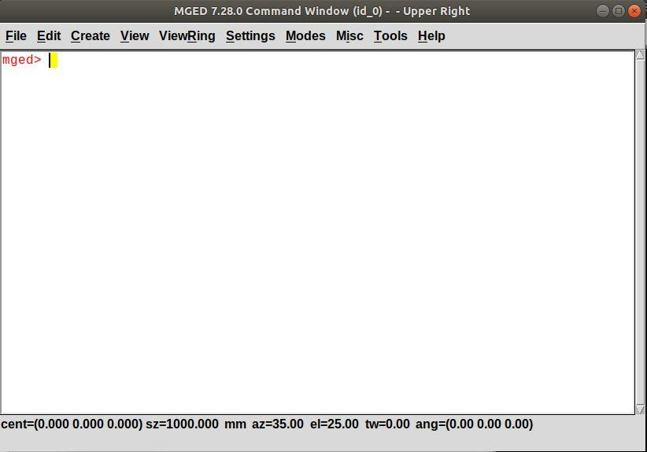
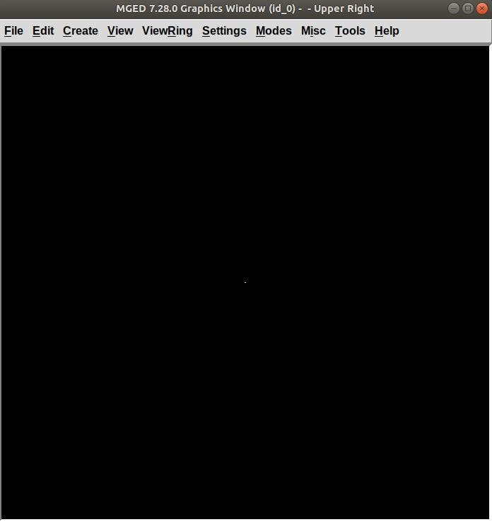

Introduction to BRL-CAD
This document aims at introducing you to BRL-CAD through a basic step-by-step tutorial. In this tutorial, you will model a chess set in BRL-CAD and by the end, we hope this tutorial changes the way you look at shapes. Brace yourself, you are about to enter the amazing world of 3D computer-aided design (CAD) modeling.
1. What is modeling
A model of an object can be used to understand how it works, to visualize, analyze, print or simply used to study the object. Now, CAD modeling is the act of creating this computer representation with specific dimensions. BRL-CAD is used to model 3D objects that have all the physical characteristics of an object.
2. Intro to BRL-CAD
BRL-CAD is a powerful 3D solid modeling system. This software has been in use for a wide range of military, educational, and industrial applications. CAD software like BRL-CAD requires a lot of practice to master, but this tutorial will help you get started. As you work through the tutorial, you will see commands taking shape into something you want to model.
To get to know more about BRL-CAD, its origin, history, you can check out the BRL-CAD FAQs.
Let’s begin this journey and get BRL-CAD installed in your system. Downloading BRL-CAD is just a few clicks:
-
Go to https://brlcad.org/ and click on the Download link at the top left corner.
-
On the next page, click on the folder for your computer. For Windows or Mac operating systems, select BRL-CAD for Windows or BRL-CAD for Mac OS X respectively.
-
Download and run the installer. Follow the installation prompts.
For a more detailed installation walkthrough, see this tutorial for newbies.
3. Intro to MGED
BRL-CAD has many applications, but in this tutorial you will work in an editor called “MGED”. The Multi-Device Geometry Editor (MGED) is the main way to create geometry in BRL-CAD.
- Launching MGED on Windows or Mac OS X
-
Double-click the application icon for MGED.
- Launching MGED on Linux
-
Open a terminal (tty) prompt, using Ctrl+Alt+T (if you are on Ubuntu). Type
mgedin the terminal prompt and then press ENTER.There is a chance that you might get an error when you type mgedin the command prompt stating mged is not recognized as a command or mged command not found. In that case, you need to specify the full path to where you installed BRL-CAD.
Two new windows should pop up: the MGED Command Window and the MGED Graphics Window (sometimes called the Geometry Window). The former is for entering commands and the later for displaying the output.

Figure 1. MGED Command Window
|

Figure 2. MGED Graphics Window
|
Both windows are empty at the moment.
While there are ways to do nearly everything in MGED via the graphical user interface menus, this tutorial is going to introduce you to modeling by way of MGED commands.
4. Opening a database:
Before you start modeling anything in MGED, create a database. Move
your mouse over or click anywhere on the Command Window to make it
active and type opendb followed by the name of the database
with the .g extension:
opendb demo.g ENTER
If the database with name demo.g doesn’t already exist or you
are creating a new one, the Command Window confirms if you want to
create a new database as shown below:
Type y and press ENTER.
If demo.g already exists, the database opens up.
5. Modeling in BRL-CAD
Let’s understand in brief how modeling in BRL-CAD works:
-
- Using primitive shapes
-
Now, what are primitive shapes? A primitive shape is a basic 3D object whose parameters can be changed without changing the shape’s type. For example, a sphere is a basic 3D shape and is one of over two dozen primitives available in BRL-CAD. Click here to see the primitives used in BRL-CAD.
-
- Employing basic Boolean operations on the shapes
-
Not every shape we model is a primitive shape; so, to get the required output we apply basic boolean operations of union, subtraction, and intersection on these shapes. For example, a hollow cylinder can be made by subtracting a cylinder from another larger cylinder.
Once you are comfortable with a few of the commands, it will get easier to model anything to everything.
6. The modeling target:
In this tutorial, you are going to model a complete chess set. We’re going to base our 3D modeling on a 2D design by Arthur Shlain.
Seeing your chess pieces and chess board taking shape with each command is going to be thrilling. First, you will model all the unique chess pieces which include a pawn, rook, king, queen, knight, and bishop:
|
Click here to see other chess piece designs by Arthur Shlain.
After modeling the chess pieces, you will move on to the chessboard which will look like this: